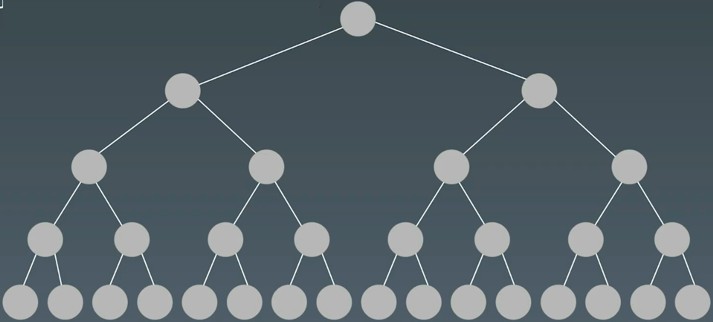
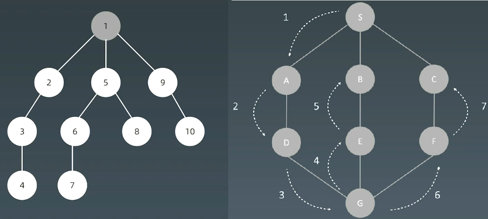
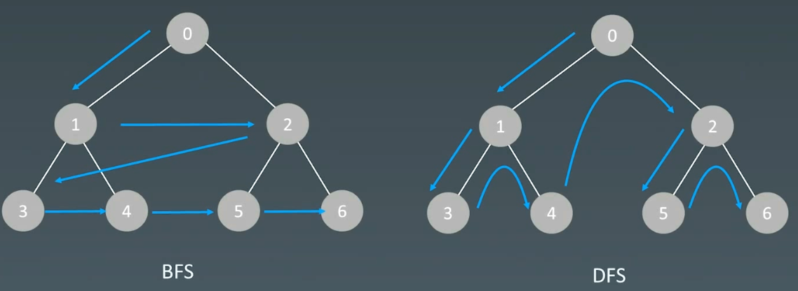

09 深度优先、广度优先 | Word count: 2.3k | Reading time: 10min | Post View:
1.搜索 1.1 遍历搜索 在树（图/状态集）中虚招特定结点
每个结点都要访问一次
每个结点仅仅要访问一次
对于结点的访问顺序不同，分为DFS，BFS

1.2 深度优先搜索 (Depth First Search) 
示例代码：
1 2 3 4 5 6 7 8 9 10 11 12 def dfs (node): if node in visited: return visited.add(node) dfs(node.left) dfs(node.right)
递归写法
1 2 3 4 5 6 7 8 9 10 11 12 visited = set () def dfs (node, visited ): visited.add(node) ... for next_node in node.children(): if not next_node in visited: dfs(next_node, visited)
非递归写法
1 2 3 4 5 6 7 8 9 10 11 12 13 14 15 16 def dfs (self, tree ): if tree.root is None : return [] visited, stack = [], [tree.root] while stack: node = stack.pop() visited.add(node) process(node) nodes = generate_related_nodes(node) stack.push(nodes) ...
C++代码示例
1 2 3 4 5 6 7 8 9 10 11 12 13 14 15 16 17 18 19 20 21 22 23 24 25 26 27 28 29 30 31 32 33 34 35 36 37 38 39 40 41 42 43 44 45 46 map<int , int > visited; void dfs (Node* root) if (!root) return ; if (visited.count (root->val)) { return ; } visited[root->val] = 1 ; ... for (int i = 0 ; i < root->children.size (); ++i) { dfs (root->children[i]); } return ; } void dfs (Node* root) map<int , int > visited; if (!root) return ; stack<Node*> stackNode; stackNode.push (root); while (!stackNode.empty ()) { Node* node = stackNode.top (); stackNode.pop (); if (visited.count (node->val)) continue ; visited[node->val] = 1 ; for (int i = node->children.size () - 1 ; i >= 0 ; --i) { stackNode.push (node->children[i]); } } return ; }
1.3 广度优先搜索 (Breadth First Search) BFS与DFS对比

BFS示例代码
1 2 3 4 5 6 7 8 9 10 11 12 13 14 15 16 17 def bfs (graph, start, end ): queue = [] queue.append([start]) visited.add(start) while queue: node = queue.pop() visited.add(node) process(node) nodes = generate_related_nodes(node) queue.push(nodes) ...
C++代码
1 2 3 4 5 6 7 8 9 10 11 12 13 14 15 16 17 18 19 20 21 22 23 void bfs (Node* root) map<int , int > visited; if (!root) return ; queue<Node*> queueNode; queueNode.push (root); while (!queueNode.empty ()) { Node* node = queueNode.top (); queueNode.pop (); if (visited.count (node->val)) continue ; visited[node->val] = 1 ; for (int i = 0 ; i < node->children.size (); ++i) { queueNode.push (node->children[i]); } } return ; }
2.示例题目 2.1 二叉树层序遍历 102. 二叉树的层序遍历 - 力扣（LeetCode）
1 2 给你二叉树的根节点 root ，返回其节点值的 层序遍历 。 （即逐层地，从左到右访问所有节点）。
1 2 3 4 5 6 7 8 9 10 11 12 13 14 15 16 17 18 19 20 21 22 23 24 25 26 27 28 29 30 31 32 33 34 35 36 37 38 39 40 41 42 43 44 45 46 47 48 49 50 51 52 53 54 55 56 57 58 59 60 61 62 63 64 class Solution {public : vector<vector<int >> levelOrder1 (TreeNode* root) { std::vector<std::vector<int >> ans; if (root == nullptr ) { return ans; } std::queue<TreeNode*> queue; queue.push (root); TreeNode* node = nullptr ; while (!queue.empty ()) { std::vector<int > level_node; int node_count = queue.size (); for (int i = 0 ; i < node_count; i++) { node = queue.front (); queue.pop (); level_node.push_back (node->val); if (node->left) { queue.push (node->left); } if (node->right) { queue.push (node->right); } } ans.push_back (std::move (level_node)); } return ans; } vector<vector<int >> levelOrder (TreeNode* root) { std::vector<std::vector<int >> ans; if (root == nullptr ) { return ans; } this ->dfs (root, 0 , ans); return ans; } private : void dfs (TreeNode* root, int depth, std::vector<std::vector<int >>& ans) if (root == nullptr ) { return ; } if (depth >= ans.size ()) { ans.push_back (std::vector<int >{}); } ans[depth].push_back (root->val); this ->dfs (root->left, depth + 1 , ans); this ->dfs (root->right, depth + 1 , ans); } };
2.2 最小基因变化 433. 最小基因变化 - 力扣（LeetCode）
1 2 3 4 5 6 7 8 9 10 基因序列可以表示为一条由 8 个字符组成的字符串，其中每个字符都是 'A' 、'C' 、'G' 和 'T' 之一。 假设我们需要调查从基因序列 start 变为 end 所发生的基因变化。一次基因变化就意味着这个基因序列中的一个字符发生了变化。 例如，"AACCGGTT" --> "AACCGGTA" 就是一次基因变化。 另有一个基因库 bank 记录了所有有效的基因变化，只有基因库中的基因才是有效的基因序列。（变化后的基因必须位于基因库 bank 中） 给你两个基因序列 start 和 end ，以及一个基因库 bank ，请你找出并返回能够使 start 变化为 end 所需的最少变化次数。如果无法完成此基因变化，返回 -1 。 注意：起始基因序列 start 默认是有效的，但是它并不一定会出现在基因库中。
1 2 3 4 5 6 7 8 9 10 11 12 13 14 15 16 17 18 19 20 21 22 23 24 25 26 27 28 29 30 31 32 33 34 35 36 37 38 39 40 41 42 43 44 45 46 47 48 49 50 51 52 53 54 55 56 57 58 59 60 61 62 63 64 65 66 67 68 69 70 class Solution {public : int minMutation (string startGene, string endGene, vector<string>& bank) std::unordered_set<std::string> cnt; std::unordered_set<std::string> visited; char keys[4 ] = {'A' , 'C' , 'G' , 'T' }; for (auto & b : bank) { cnt.emplace (b); } if (startGene == endGene) { return 0 ; } if (!cnt.count (endGene)) { return -1 ; } std::queue<std::string> queue; queue.emplace (startGene); int step = 1 ; while (!queue.empty ()) { int size = queue.size (); for (int i = 0 ; i < size; i++) { std::string curr = queue.front (); queue.pop (); for (int j = 0 ; j < 8 ; j++) { for (int k = 0 ; k < 4 ; k++) { if (keys[k] != curr[j]) { std::string next = curr; next[j] = keys[k]; if (!visited.count (next) && cnt.count (next)) { if (next == endGene) { return step; } queue.emplace (next); visited.emplace (next); } } } } } step++; } return -1 ; } };
2.3 BFS括号生成 1 2 3 4 5 6 7 8 9 10 11 12 13 14 15 16 17 18 19 20 21 22 23 24 25 26 27 28 29 30 31 32 33 34 35 36 class SolutionDFS {public : vector<string> generateParenthesis (int n) { std::vector<std::string> ans; if (n == 0 ) { return ans; } this ->dfs ("" , n, n, ans); return ans; } private : void dfs (std::string curr_str, int left, int right, std::vector<std::string>& ans) if (left == 0 && right == 0 ) { ans.emplace_back (curr_str); return ; } if (left > right) { return ; } if (left > 0 ) { this ->dfs (curr_str + "(" , left - 1 , right, ans); } if (right > 0 ) { this ->dfs (curr_str + "(" , left, right - 1 , ans); } } };
1 2 3 4 5 6 7 8 9 10 11 12 13 14 15 16 17 18 19 20 21 22 23 24 25 26 27 28 29 30 31 32 33 34 35 36 37 38 39 40 41 42 43 44 45 46 47 48 49 50 class Node {public : Node (std::string str, int left, int right) { m_str = str; m_left = left; m_right = right; } std::string m_str; int m_left; int m_right; }; class Solution {public : vector<string> generateParenthesis (int n) { std::vector<std::string> ans; if (n == 0 ) { return ans; } std::queue<Node> queue; queue.push (Node ("" , n, n)); while (!queue.empty ()) { Node curr_node = queue.front (); queue.pop (); if (curr_node.m_left == 0 && curr_node.m_right == 0 ) { ans.emplace_back (curr_node.m_str); } if (curr_node.m_left > 0 ) { queue.push (Node (curr_node.m_str + "(" , curr_node.m_left - 1 , curr_node.m_right)); } if (curr_node.m_right > 0 && curr_node.m_left < curr_node.m_right) { queue.push (Node (curr_node.m_str + ")" , curr_node.m_left, curr_node.m_right - 1 )); } } return ans; } };
2.4 岛屿数量（高频） 200. 岛屿数量 - 力扣（LeetCode）
1 2 3 4 5 给你一个由 '1' （陆地）和 '0' （水）组成的的二维网格，请你计算网格中岛屿的数量。 岛屿总是被水包围，并且每座岛屿只能由水平方向和或竖直方向上相邻的陆地连接形成。 此外，你可以假设该网格的四条边均被水包围。
1 2 3 4 5 6 7 8 9 10 11 12 13 14 15 16 17 18 19 20 21 22 23 24 25 26 27 28 29 30 31 32 33 34 35 36 37 38 39 40 41 42 43 44 45 46 47 48 49 50 51 52 53 class Solution {public : int numIslands (vector<vector<char >>& grid) int island_num = 0 ; m_grid = grid; for (int i = 0 ; i < m_grid.size (); i++) { for (int j = 0 ; j < m_grid[i].size (); j++) { if (m_grid[i][j] == '0' ) { continue ; } island_num += this ->sink (i, j); } } return island_num; } private : int sink (int i, int j) if (m_grid[i][j] == '0' ) { return 0 ; } m_grid[i][j] = '0' ; for (int k = 0 ; k < 4 ; k++) { int x = i + m_dx[k]; int y = j + m_dy[k]; if (x >= 0 && x < m_grid.size () && y >= 0 && y < m_grid[i].size ()) { if (m_grid[x][y] == '0' ) { continue ; } this ->sink (x, y); } } return 1 ; } int m_dx[4 ] = {-1 , 1 , 0 , 0 }; int m_dy[4 ] = {0 , 0 , -1 , 1 }; std::vector<std::vector<char >> m_grid; };